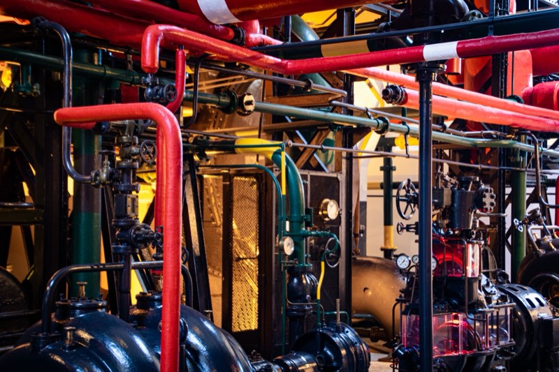
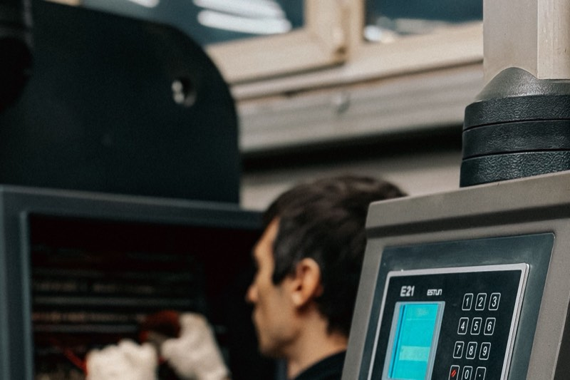
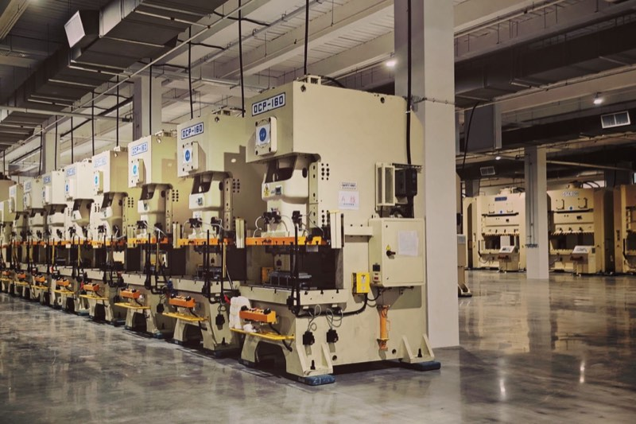
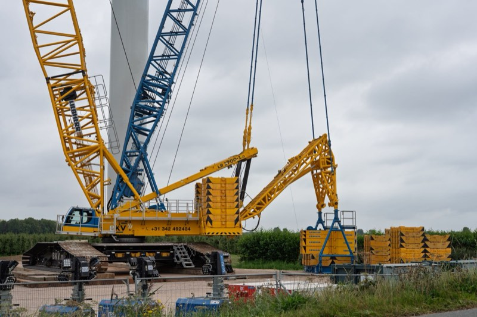

Our services
Engineering services for industrial operations
Four connected service areas covering the design, reliability, performance and delivery of mechanical plant and equipment.

Mechanical Engineering
Practical mechanical engineering support for the equipment at the heart of your operation. We help you understand the condition and capability of existing plant, develop modifications and upgrades, and resolve technical problems that affect safety, output or cost.
What’s included
- Equipment assessments Condition and fitness-for-purpose reviews of mechanical plant.
- Design support Calculations, design reviews, drawings and specifications for new and modified equipment.
- Rotating machinery Engineering support for pumps, fans, compressors, gearboxes and drive trains.
- Plant upgrades Scoping and engineering of replacements, modifications and capacity changes.
- Technical problem-solving Investigating and resolving persistent or unusual mechanical issues.

Asset Reliability & Maintenance
Structured reliability engineering that helps maintenance teams focus effort where it matters most. We use recognised methods to understand how assets fail, why they fail and which maintenance activities genuinely reduce risk.
What’s included
- Reliability-centred maintenance (RCM) Systematic review of functions, failure modes and the most appropriate maintenance tasks.
- Failure analysis (RCA) Root cause analysis of equipment failures, with clear corrective actions.
- Preventive maintenance optimisation Reviewing task content and intervals to remove waste and close gaps.
- Asset lifecycle planning Planning for refurbishment, replacement and long-term asset care.

Plant Optimisation
Engineering-led reviews of how your plant performs as a system. We look for the constraints that limit output, the causes of lost availability and the practical improvements that can make day-to-day operation more efficient.
What’s included
- Production bottleneck analysis Identifying the equipment and processes that constrain throughput.
- Equipment availability Understanding downtime and the factors that reduce availability.
- Continuous improvement Supporting structured improvement activity with engineering input.
- Operational efficiency Reviewing energy use, operating practices and equipment performance.

Engineering Projects
Technical support for industrial projects from early planning through to handover. We help coordinate the engineering, keep technical requirements in view and support the installation and commissioning of new or modified equipment.
What’s included
- Project planning Defining scope, technical requirements, sequencing and interfaces.
- Engineering design coordination Coordinating design input across disciplines, suppliers and contractors.
- Equipment installation support Technical oversight and problem-solving during installation.
- Commissioning Planning and supporting testing, start-up and handover to operations.
Let’s Engineer What’s Next.
Discuss your engineering challenges with our team.